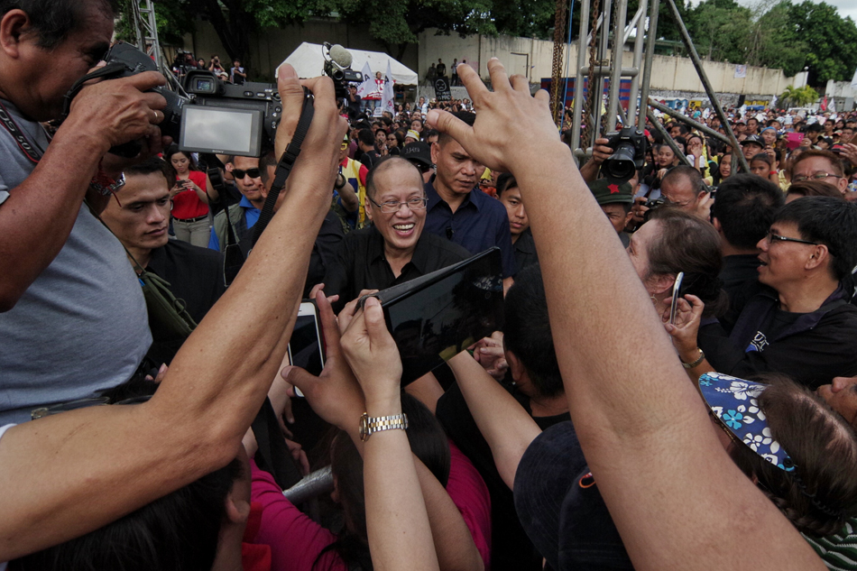
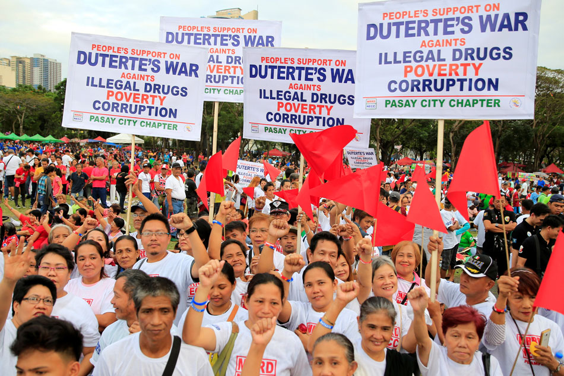

Out of the shadows:
Manila's meth dealers back on the streets as cops pull back
Philippine President Rodrigo Duterte's war on drugs had until three weeks ago driven the trade in crystal methamphetamine underground, according to residents and drug users in some of the slum areas of the nation's capital city.
As thousands of users and dealers were shot dead by police and vigilantes in the first seven months after Duterte came to power last June, open dealing in the drug, known here by its street name shabu, largely stopped. Instead, deals were done on the quiet between people who knew each other, maybe with a text message first.
But since Duterte ordered the Philippine National Police (PNP) to stand down from the drugs war last month, after declaring the force "rotten to the core", the drugs trade has come back out of the shadows, more than half a dozen drug users and dealers in some of Manila's toughest areas said in interviews. Many spoke on condition that only their first names be used in this story.

Duterte's opponents turn historic event into protest march
Supporters and opponents of Philippine President Rodrigo Duterte turned a traditional celebration of the 1986 "People Power" uprising into demonstrations for and against his bloody war on drugs.
Former president Benigno Aquino, the only son of Corazon Aquino, the icon of democracy, led about 3,000 protesters gathered at Manila's historic highway, site of the popular uprising that toppled dictator Ferdinand Marcos three decades ago.
Former President Benigno Aquino III attends the 31 EDSA People Power revolution anniversary on EDSA.
Duterte supporters gather at Luneta, back war on drugs
Thousands of supporters of President Duterte converged at the Quirino Grandstand on Saturday night to show their support for the president's war on drugs and other advocacies.
 President Rodrigo Duterte supporters gather during a vigil backing the anti-drugs crackdown at the Luneta Park..Supporters from Manila and as far as Mindanao joined the gathering called "People's Support for Duterte's war against illegal drugs, poverty, and corruption."
Manila police estimated the crowd to be at around 200,000 as of 7 p.m.
Justice Secretary Vitaliano Aguirre II said the gathering shows that support for the president has not changed despite criticisms against his administration.